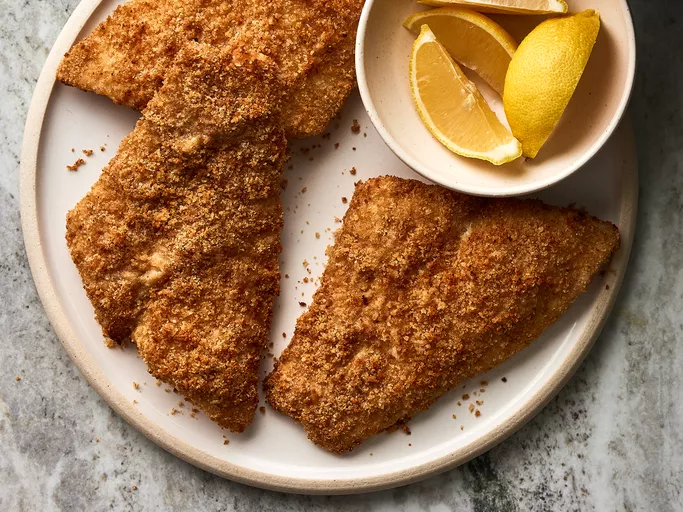

Fried fish

Discription
Okey let`s cook our fish
Ingradients
- 1 cup dry bread crumbs
- ¼ cup vegetable oil
- 4 flounder fillets
- 1 egg, beaten
- 1 lemon, sliced
How to Make Fried Fish fast
- Step 1 - Preheat an air fryer to 350 degrees F (180 degrees C) .
- Step 2 - Place bread crumbs and oil into a shallow bowl; stir until mixture becomes loose and crumbly.
- Step 3 - Dip fish fillets into egg; shake off any excess. Dip fillets into bread crumb mixture; coat evenly and fully
- Step 4 - Lay coated fillets gently in the air fryer basket; cook in the preheated air fryer until fish flakes easily with a fork, about 12 minutes.